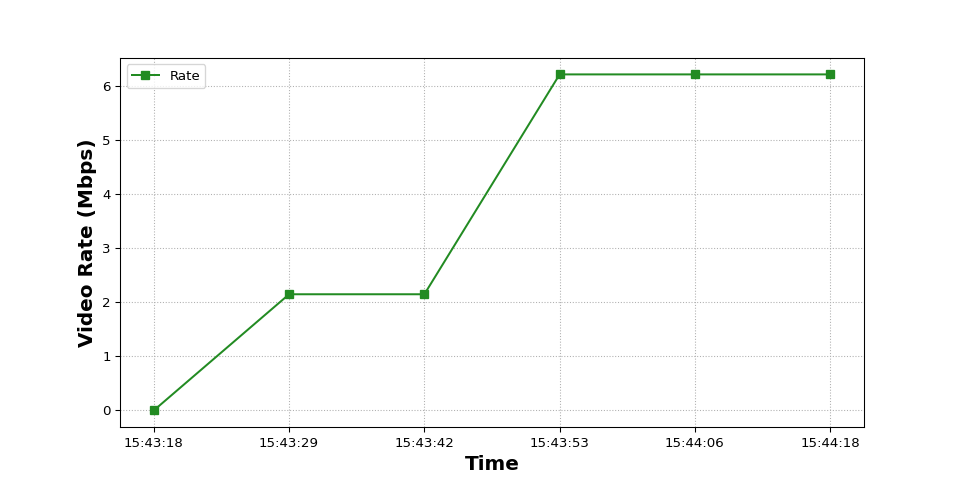
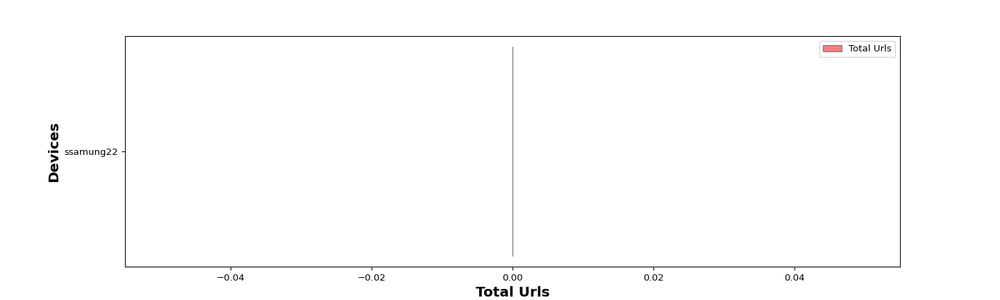
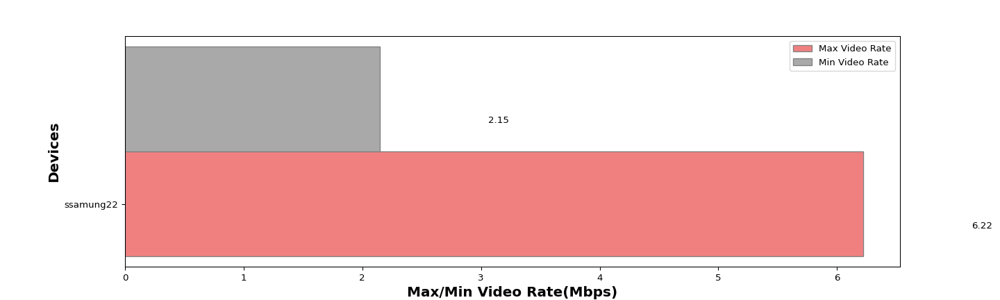
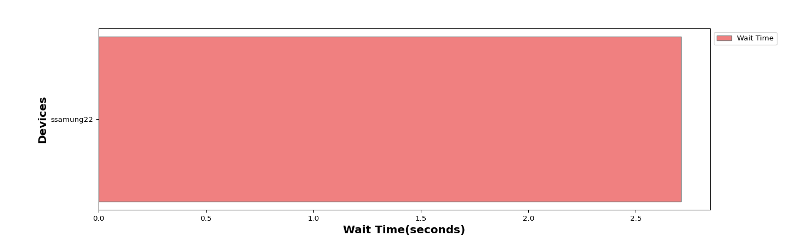

The Candela Video streaming test is designed to measure the access point performance and stability by streaming the videos from the local browseror from over the Internet in real clients like android which are connected to the access point,this test allows the user to choose the options like video link, type of media source, media quality, number of playbacks.Along with the performance other measurements like No of Buffers, Wait-Time, per client Video Bitrate, Video Quality, and more. The expected behavior is for the DUT to be able to handle several stations (within the limitations of the AP specs)and make sure all capable clients can browse the video.
| Test Setup Information |
|
||||||||||||||||||||||||||||




The below tables provides detailed information for the Video Streaming test.
| DEVICE TYPE | Username | SSID | MAC | Channel | Mode | Buffers | Wait-Time(Sec) | Min Video Rate(Mbps) | Avg Video Rate(Mbps) | Max Video Rate(Mbps) | Total URLs | Total Errors | RSSI (dbm) | Link Speed | Bytes Read (bytes) | Average Rx Rate (Mbps) |
|---|---|---|---|---|---|---|---|---|---|---|---|---|---|---|---|---|
| Android | ssamung22 | NETGEAR_2G_wpa2 | 46:ca:12:8c:58:67 | 11 | 802.11abgn 20 | 1 | 2.71 | 2.15 | 4.17 | 6.22 | 0 | 0 | -12 dbm | 173 Mbps | 70857200 | 12.35 |
The below tables provides detailed information of total errors for the web browsing test.
| DEVICE | TOTAL ERRORS |
|---|---|
| ssamung22 | 0 |